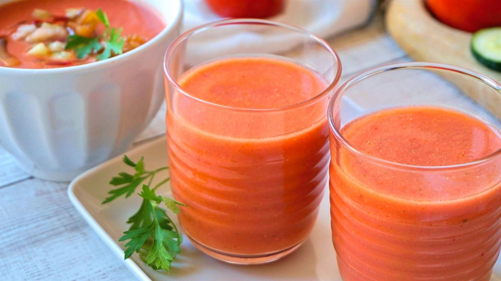

Gazpacho

Description
La bebida española por antonomasia, el gazpacho!
El secreto mejor guardado de España te contamos como preparalo aqui!
Ingredients
- Aceite de oliva virgen extra 100ml
- Vinagre de Jerez o de vino 30ml
- Tomates pera maduros 1kg
- Un diente de ajo
- Un pimiento verde grande
- Un pepino
- Sal y agua al gusto
Steps
- Preparación de ingredientes
- Limpiar bien con agua los tomates, pepino y pimiento
- Pelar los tomates para que el gazpacho quede sedoso y los cortar en cuartos
- Quitar los extremos del pepino, pelar y cortar en trocitos
- Pelar el diente de ajo y quitar el centro
- Preparación del gazpacho
- Poner los ingredientes del bol en una batidora
- Triturar y según se va haciendo sitio seguir añadiendo los ingredientes
- Ajustar con agua y sal hasta que quede al gusto
- Servir preferiblemente en vaso